يسلم عبدالله يسلم بابطين
عن نفسي :
عبدالله بابطين , طالب تقنية معلومات , مصمم جرافيك و موشن جرافيك محترف , و مصور فوتوغرافي , عملت في كلا المجالين و لدي شهادات دراسة في المجالات و مشاركة في فعاليات عديدة , أما في مجال المونتاج فلي خبرة فيه منذ الصغر فقط شاركت في مسابقة صناعة الأفلام و أحرزت المركز الأول و انا في الثالثة عشر من عمري ولكني دائماً اطور نفسي و اتعلم كل ما هو جديد , ليساعدني في تطوير ما اقدم من أعمال .
الــخــبــرات :
- تطوعت في نادي متطوعون في فعاليات اليوم العالمي للتطوع (التطوع رسالة سلام 2 ) كمصور و كاتب محتوى و معد مسرح
.
- عملت كمصمم لكثير من المتاجر الأكترونية و المحلات التجارية و تصميم بنرات كبير المقاس .
-
عملت مع مؤسسة XYZ في كتابة سناريوهات مسلسل حضرم تون
.
-
إجادة صناعة المحتوى المرئي و التحدث أمام الكاميرا بطلاقة
.
الــمــؤهل العلمي :
-
طالب تقنية معلومات مستوى ثاني
- 2020-2021 خريج ثانوية عامة (علمي )
- دبلوم جرافيك في برنامج الفوتوشوب في معهد توب أرب 2023/2024
- دورة التصوير الفوتوغرافي المحترف في معهد توب أرب 2020/2021
- دورة أساسيات صيانة الحاسب الالي في مركز الملك سلمان للإغاثة 2020/2021
- دورة مبادئ المحاسبة و نظام اليسير المحاسبي في شركة مصادر للحلول الإكترونية 2021/2022
مــعــلــومــات :
- العمر : 20 سنة
- تاريخ الميلاد : 2004/06/30
لـلــتــواصــل :
-  0 5 0 8 7 7 7 3 7
-
 9 8 1 6 6 2 1 7 7
9 8 1 6 6 2 1 7 7
-  y y y 5 5 3 8 @ g m a i l . c o m